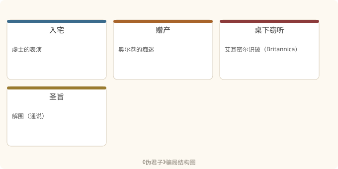

伪君子
一、基本信息
| 作者 | 莫里哀 |
|---|---|
| 成书/出版 | 1664年首演、1669年出版（Britannica：produced in 1664 and published in French in 1669） Tartuffe — Encyclopaedia Britannica（百科全书） |
| 国别/地区 | 法国 |
| 时代 | 近代 · 路易十四时代 |
| 体裁 | 五幕喜剧 |
| 语言 | 法语 |

《伪君子》骗局结构图（主题·结构图）
二、创作背景
Britannica：五幕喜剧，又名'The Imposter'（骗子）；达尔杜弗——'a pious-seeming fraud'（貌似虔诚的骗子）几乎毁掉富商奥尔恭一家；'Elmire, Orgon's wife, sees through Tartuffe's wicked hypocrisy and exposes him'（妻子艾耳密尔识破伪善——Britannica）。
压制（Britannica B240）：'They were met with public outcry and were suppressed by the Roman Catholic Church.'（该剧遭遇教会压制——通说待核：1664—1669禁演年表）。
三、内容脉络
奥尔恭迷上'虔诚'的达尔杜弗，逐子赠产（通说）。
桌下窃听：艾耳密尔设局让丈夫亲见（Britannica：sees through……and exposes him）。
圣旨解围：国王的英明收束（通说待核——尾声对王权的颂词）。
四、主要人物表
| 人物 | 身份 | 说明 |
|---|---|---|
| 达尔杜弗 | 伪信士 | 伪善的化身（Britannica） |
| 奥尔恭 | 富商家长 | 被蒙蔽者 |
| 艾耳密尔 | 奥尔恭之妻 | 识破者（Britannica） |
| 道丽娜 | 女仆 | 最清醒的人（通说） |
五、主题与艺术特点
- 宗教伪善的喜剧解剖（Britannica 语境）。
- 父权与家庭财产的荒诞（通说）。
- 仆人的智慧：道丽娜（通说）。
六、影响与评论
- Britannica：莫里哀'widely regarded as the finest writer of comedy in the French language'（B240）。
Moliere — Encyclopaedia Britannica（百科全书） - 'Tartuffe'成为语言中的伪善代名词（通说待核）。
Tartuffe — Encyclopaedia Britannica（百科全书）
七、阅读建议
难点
- 亚历山大体诗行（中译需看韵文/散文版本）。
- 1660年代法国宗教政治背景。
- 李健吾译本（上海译文出版社，通说待核）。
- 法文原版（公有领域）。
一次读完（五幕紧凑）；对照《悭吝人》。
八、待核实
- 1664—1669禁演年表核对。
- 李健吾译本信息核对。
- 结尾颂王权一幕的解读争议待核。
本页主要来源
莫里哀的其他收录作品：伪君子